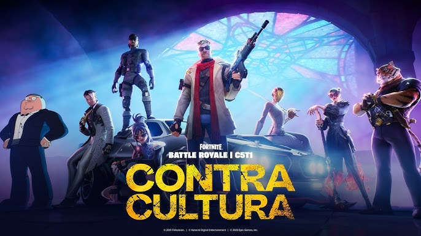

Fortnite
Bienvenido al emocionante mundo de Fortnite, un fenómeno global que ha cautivado a millones de jugadores en todo el mundo. Descubre todo lo que necesitas saber sobre este apasionante juego de batalla real!
¡Entra a jugar YA!
Enlace de descarga https://www.fortnite.com/
¿Qué es Fortnite?
Fortnite, la creación épica de Epic Games, ha dejado una marca indeleble en el mundo de los videojuegos. Este fenómeno global ha alcanzado niveles extraordinarios de popularidad gracias a su dinámico y emocionante enfoque en la acción, estrategia y, por supuesto, ¡la capacidad de construir estructuras increíbles en tiempo real!
¿Qué es lo que ofrece Fortnite?
Fortnite ofrece tres modos de juego únicos que atraen a jugadores de todo el mundo:
Fortnite Salvar al Mundo
Sumérgete en el modo "Salvar el Mundo", donde los jugadores colaboran para enfrentarse a hordas de monstruos y completar misiones emocionantes. Con la posibilidad de mejorar habilidades, obtener recompensas y explorar un mundo expansivo, este modo ofrece una experiencia cooperativa única.
Fortnite Battle Royale

El modo "Battle Royale" ha llevado la competición a un nuevo nivel. Cien jugadores se enfrentan en un mapa en constante cambio, compitiendo para ser el último en pie. Con la combinación perfecta de habilidades de construcción, estrategia y habilidades de tiro, cada partida es una experiencia intensa y llena de adrenalina.
Fortnite Modo creativo

Pero también en Fortnite se le a desarrollado un modo de juego llamado creativo en donde los jugadores pueden dar rienda suelta a su creatividad en el modo creativo de Fortnite. Aquí, tienen la libertad de construir, diseñar y personalizar su propio mundo virtual. Desde la creación de impresionantes estructuras hasta la configuración de desafíos personalizados, el modo creativo permite a los jugadores ser arquitectos de sus propias experiencias de juego.
Cualidades de Fortnite
Fortnite no solo ofrece emocionantes modos de juego, sino que también presenta una amplia variedad de armas, ítems y personajes únicos. Con eventos especiales, desafíos regulares y actualizaciones continuas, el juego se mantiene fresco y emocionante, brindando a los jugadores un motivo constante para regresar y explorar nuevas posibilidades.
Comunidad y Competiciones:
La comunidad de Fortnite es verdaderamente diversa, uniendo a jugadores de todas partes del mundo. Desde jugadores casuales hasta profesionales de los deportes electrónicos, Fortnite ha creado un espacio virtual donde todos son bienvenidos. Las competiciones en línea y eventos en vivo generan emoción y camaradería, conectando a jugadores de todas las edades y habilidades.
Impacto Cultural:
Fortnite ha trascendido el ámbito de los videojuegos para convertirse en un fenómeno cultural. Bailes, memes y referencias de Fortnite son parte de la cultura popular. La accesibilidad y la capacidad de conectarse con amigos en línea han convertido a Fortnite en un punto de encuentro virtual único.

Ya sea que seas un ávido jugador en busca de competición, un creador que busca expresar su creatividad o simplemente alguien que busca sumergirse en un universo emocionante, Fortnite tiene algo para todos. Únete a la acción, descubre nuevas aventuras y sé parte de una comunidad global que celebra la diversidad y la pasión por los videojuegos.
Elaborado por: Rodriguez Ortiz Jorge Angel 6to 23
Escuela Preparatoria No. 1 UAEH
Aplicaciones computacionales web y móviles V2.1
6 de Febrero de 2024